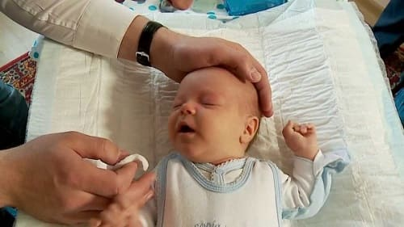
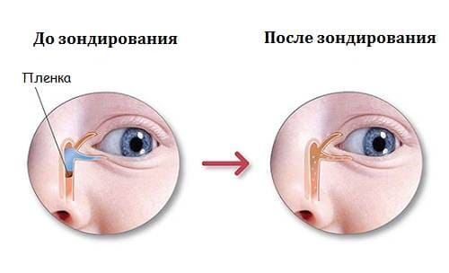

К двухнедельному возрасту глаза детей начинают слезоточить. Железы, расположенные в веках, выделяют водянистую жидкость, смешанную с маслянистым веществом, которое замедляет испарение слез. Слезы стекают в крошечный мешочек, расположенный возле внутреннего угла глаз, затем — в слезный проток (слезно-носовой проток), а затем в нос. Примерно у 30% младенцев слезные протоки закупориваются. Носовая оконечность протоков покрыта крошечной мембраной, которая постепенно открывается вскоре после рождения, благодаря чему слезы, как полагается, стекают в нос. Однако иногда эта мембрана остается закрытой. Или слезные протоки могут быть слишком узкими для нормального дренажа. Это способствует развитию инфекции, длительного конъюнктивита.
ПРИЗНАКИ И СИМПТОМЫ ЗАКУПОРКИ СЛЕЗНОГО ПРОТОКА
ЧТО ДЕЛАТЬ
Закупоренные слезные протоки не причиняют вреда, и в 90% случаев эта проблема проходит к 1 году без лечения. Но, хотя это не вызывает боли и редко беспокоит детей, закупорка слезных протоков может причинять неудобство. Чтобы в маленьких глазках не скапливалась излишняя грязь, нужно:
Промывать глаза. Прочищайте глаза от излишних слизистых слез теплым платком два раза в день.
Массируйте слезные протоки. Кончиком своего чистого пальца (с подрезанными ногтями) или ватным тампоном, смоченным теплой чистой водой, аккуратно массируйте слезные протоки, которые можно определить по крошечной шишечке (называемой слезный мешок), расположенной у внутреннего угла глаза. Массируйте по направлению к носу в вертикальном направлении, по меньшей мере, шесть раз в день или перед каждой сменой подгузника. Такой массаж сдавливает распухший слезный мешок, выводит слезы через проток и постепенно раскрывает его.

ХИРУРГИЧЕСКОЕ ЛЕЧЕНИЕ
Примерно в 90% случаев закупоренные слезные протоки открываются к 1 году. Те, которые не открываются к этому возрасту, почти наверняка откроются к 2 годам. Если слезный проток остается закупоренным после 2 лет, возможно, эта проблема может сохраниться на неопределенный срок. Детский офтальмолог может провести хирургическое раскрытие слезных протоков. Существуют две процедуры, которые выполняются у детей разного возраста:
• Зондирование слезного протока. Эта процедура применяется у младенцев в возрасте до 12 месяцев в кабинете врача без анестезии. Младенца фиксируют и в закупоренные протоки вводят металлические зонды, пока протоки не откроются. Это довольно травмирующая операция. Главное преимущество ее заключается в том, что исключаются побочные эффекты общего наркоза.
• Бужирование слезного протока. Когда ребенок становится слишком взрослым, чтобы выдержать зондирование (как правило, старше 12 месяцев), выполняется эта процедура в операционной палате под общим наркозом. Через слезный проток проводится тоненькая нить, пока он не откроется. Эта процедура более щадящая для глаз и протоков, чем зондирование.
Решение, когда и как лечить слезный проток, принимаете вы и ваш врач. Поскольку зондирование может быть травмирующим, а вероятность того, что эта проблема просто-напросто пройдет с возрастом, высока, мы предлагаем подождать, по крайней мере, до 2 лет. Если к этому моменту проблема не разрешилась, подумайте о процедуре бужирования.

Здоровье ребенка от докторов Сирс / Сирс У. и др.